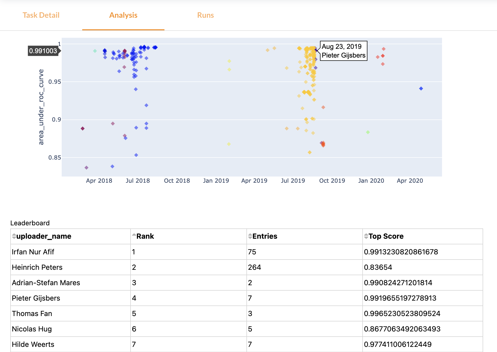
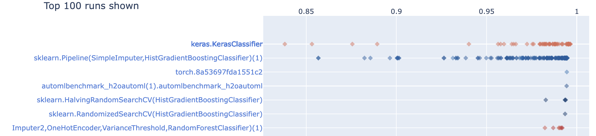
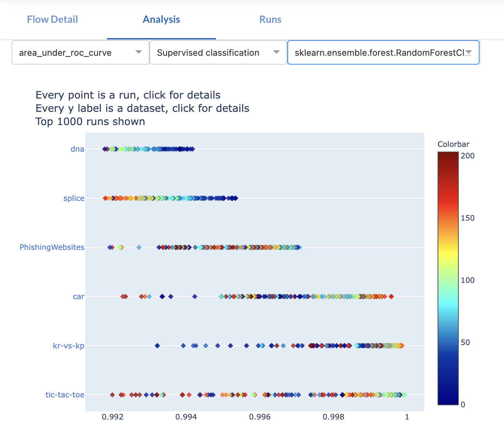
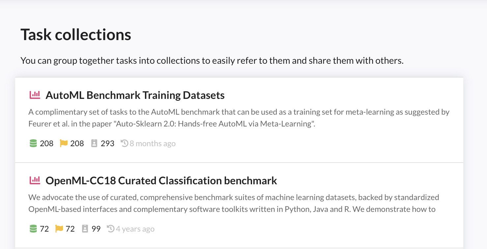
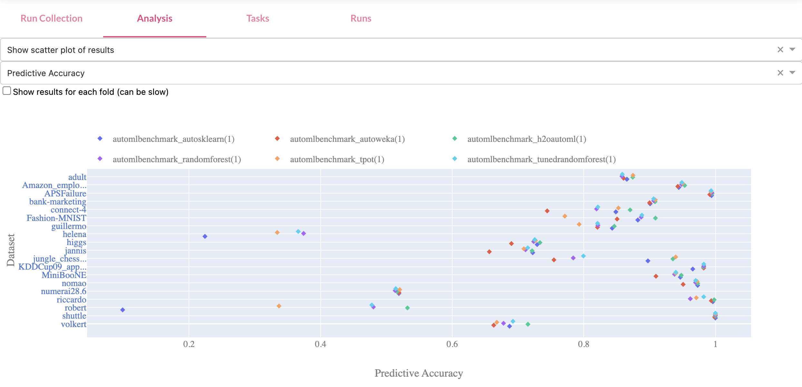

An open, automated, and frictionless machine learning environment.
1000s of data sets, uniformly formatted, easy to load, organized online
Models and pipelines automatically uploaded from machine learning libraries
Extensive APIs to integrate OpenML into your tools and scripts
Easily reproducible results (e.g. models, evaluations) for comparison and reuse
Stand on the shoulders of giants, and collaborate in real time
Make your work more visible and reusable
Built for automation: streamline your experiments and model building
Concepts¶
OpenML operates on a number of core concepts which are important to understand:
Datasets
Datasets are pretty straight-forward. Tabular datasets are self-contained, consisting of a number of rows (instances) and columns (features), including their data types. Other
modalities (e.g. images) are included via paths to files stored within the same folder.
Datasets are uniformly formatted (S3 buckets with Parquet tables, JSON metadata, and media files), and are auto-converted and auto-loaded in your desired format by the APIs (e.g. in Python) in a single line of code.
Example: The Iris dataset or the Plankton dataset
Tasks
A task consists of a dataset, together with a machine learning task to perform, such as classification or clustering and an evaluation method. For
supervised tasks, this also specifies the target column in the data.
Example: Classifying different iris species from other attributes and evaluate using 10-fold cross-validation.
Flows
A flow identifies a particular machine learning algorithm (a pipeline or untrained model) from a particular library or framework, such as scikit-learn, pyTorch, or MLR. It contains details about the structure of the model/pipeline, dependencies (e.g. the library and its version) and a list of settable hyperparameters. In short, it is a serialized description of the algorithm that in many cases can also be deserialized to reinstantiate the exact same algorithm in a particular library.
Example: scikit-learn's RandomForest or a simple TensorFlow model
Runs
A run is an experiment - it evaluates a particular flow (pipeline/model) with particular hyperparameter settings, on a particular task. Depending on the task it will include certain results, such as model evaluations (e.g. accuracies), model predictions, and other output files (e.g. the trained model).
Example: Classifying Gamma rays with scikit-learn's RandomForest
Data¶
Discovery¶
OpenML allows fine-grained search over thousands of machine learning datasets. Via the website, you can filter by many dataset properties, such as size, type, format, and many more. Via the APIs you have access to many more filters, and you can download a complete table with statistics of all datasest. Via the APIs you can also load datasets directly into your preferred data structures such as numpy (example in Python). We are also working on better organization of all datasets by topic

Sharing¶
You can upload and download datasets through the website or though the APIs (recommended). You can share data directly from common data science libraries, e.g. from Python or R dataframes, in a few lines of code. The OpenML APIs will automatically extract lots of meta-data and store all datasets in a uniform format.
import pandas as pd
import openml as oml
# Create an OpenML dataset from a pandas dataframe
df = pd.DataFrame(data, columns=attribute_names)
my_data = oml.datasets.functions.create_dataset(
name="covertype", description="Predicting forest cover ...",
licence="CC0", data=df
)
# Share the dataset on OpenML
my_data.publish()
Every dataset gets a dedicated page on OpenML with all known information, and can be edited further online.

Data hosted elsewhere can be referenced by URL. We are also working on interconnecting OpenML with other machine learning data set repositories
Automated analysis¶
OpenML will automatically analyze the data and compute a range of data quality characteristics. These include simple statistics such as the number of examples and features, but also potential quality issues (e.g. missing values) and more advanced statistics (e.g. the mutual information in the features and benchmark performances of simple models). These can be useful to find, filter and compare datasets, or to automate data preprocessing. We are also working on simple metrics and automated dataset quality reports
The Analysis tab (see image below, or try it live) also shows an automated and interactive analysis of all datasets. This runs on open-source Python code via Dash and we welcome all contributions

The third tab, 'Tasks', lists all tasks created on the dataset. More on that below.
Dataset ID and versions¶
A dataset can be uniquely identified by its dataset ID, which is shown on the website and returned by the API. It's 1596 in the covertype example above. They can also be referenced by name and ID. OpenML assigns incremental version numbers per upload with the same name. You can also add a free-form version_label with every upload.
Dataset status¶
When you upload a dataset, it will be marked in_preparation until it is (automatically) verified. Once approved, the dataset will become active (or verified). If a severe issue has been found with a dataset, it can become deactivated (or deprecated) signaling that it should not be used. By default, dataset search only returns verified datasets, but you can access and download datasets with any status.
Special attributes¶
Machine learning datasets often have special attributes that require special handling in order to build useful models. OpenML marks these as special attributes.
A target attribute is the column that is to be predicted, also known as dependent variable. Datasets can have a default target attribute set by the author, but OpenML tasks can also overrule this. Example: The default target variable for the MNIST dataset is to predict the class from pixel values, and most supervised tasks will have the class as their target. However, one can also create a task aimed at predicting the value of pixel257 given all the other pixel values and the class column.
Row id attributes indicate (externally defined) row IDs. Ignore attributes are other columns that should not be included in training data. OpenML will clearly mark these, and will (by default) drop these columns when constructing training sets.
Tasks¶
Tasks describe what to do with the data. OpenML covers several task types, such as classification and clustering. Tasks are containers including the data and other information such as train/test splits, and define what needs to be returned. They are machine-readable so that you can automate machine learning experiments, and easily compare algorithms evaluations (using the exact same train-test splits) against all other benchmarks shared by others on OpenML.
Collaborative benchmarks¶
Tasks are real-time, collaborative benchmarks (e.g. see MNIST below). In the Analysis tab, you can view timelines and leaderboards, and learn from all prior submissions to design even better algorithms.

Discover the best algorithms¶
All algorithms evaluated on the same task (with the same train-test splits) can be directly compared to each other, so you can easily look up which algorithms perform best overall, and download their exact configurations. Likewise, you can look up the best algorithms for similar tasks to know what to try first.

Automating benchmarks¶
You can search and download existing tasks, evaluate your algorithms, and automatically share the results (which are stored in a run). Here's what this looks like in the Python API. You can do the same across hundreds of tasks at once.
from sklearn import ensemble
from openml import tasks, runs
# Build any model you like
clf = ensemble.RandomForestClassifier()
# Download any OpenML task (includes the datasets)
task = tasks.get_task(3954)
# Automatically evaluate your model on the task
run = runs.run_model_on_task(clf, task)
# Share the results on OpenML.
run.publish()
You can create new tasks via the website or via the APIs as well.
Flows¶
Flows are machine learning pipelines, models, or scripts. They are typically uploaded directly from machine learning libraries (e.g. scikit-learn, pyTorch, TensorFlow, MLR, WEKA,...) via the corresponding APIs. Associated code (e.g., on GitHub) can be referenced by URL.
Analysing algorithm performance¶
Every flow gets a dedicated page with all known information. The Analysis tab shows an automated interactive analysis of all collected results. For instance, below are the results of a scikit-learn pipeline including missing value imputation, feature encoding, and a RandomForest model. It shows the results across multiple tasks, and how the AUC score is affected by certain hyperparameters.

This helps to better understand specific models, as well as their strengths and weaknesses.
Automated sharing¶
When you evaluate algorithms and share the results, OpenML will automatically extract all the details of the algorithm (dependencies, structure, and all hyperparameters), and upload them in the background.
from sklearn import ensemble
from openml import tasks, runs
# Build any model you like.
clf = ensemble.RandomForestClassifier()
# Evaluate the model on a task
run = runs.run_model_on_task(clf, task)
# Share the results, including the flow and all its details.
run.publish()
Reproducing algorithms and experiments¶
Given an OpenML run, the exact same algorithm or model, with exactly the same hyperparameters, can be reconstructed within the same machine learning library to easily reproduce earlier results.
from openml import runs
# Rebuild the (scikit-learn) pipeline from run 9864498
model = openml.runs.initialize_model_from_run(9864498)
Note
You may need the exact same library version to reconstruct flows. The API will always state the required version. We aim to add support for VMs so that flows can be easily (re)run in any environment
Runs¶
Automated reproducible evaluations¶
Runs are experiments (benchmarks) evaluating a specific flows on a specific task. As shown above, they are typically submitted automatically by machine learning libraries through the OpenML APIs), including lots of automatically extracted meta-data, to create reproducible experiments. With a few for-loops you can easily run (and share) millions of experiments.
Online organization¶
OpenML organizes all runs online, linked to the underlying data, flows, parameter settings, people, and other details. See the many examples above, where every dot in the scatterplots is a single OpenML run.
Independent (server-side) evaluation¶
OpenML runs include all information needed to independently evaluate models. For most tasks, this includes all predictions, for all train-test splits, for all instances in the dataset, including all class confidences. When a run is uploaded, OpenML automatically evaluates every run using a wide array of evaluation metrics. This makes them directly comparable with all other runs shared on OpenML. For completeness, OpenML will also upload locally computed evaluation metrics and runtimes.
New metrics can also be added to OpenML's evaluation engine, and computed for all runs afterwards. Or, you can download OpenML runs and analyse the results any way you like.
Note
Please note that while OpenML tries to maximise reproducibility, exactly reproducing all results may not always be possible because of changes in numeric libraries, operating systems, and hardware.
Collections and benchmarks¶
You can combine tasks and runs into collections, to run experiments across many tasks at once and collect all results. Each collection gets its own page, which can be linked to publications so that others can find all the details online.
Benchmarking suites¶
Collections of tasks can be published as benchmarking suites. Seamlessly integrated into the OpenML platform, benchmark suites standardize the setup, execution, analysis, and reporting of benchmarks. Moreover, they make benchmarking a whole lot easier:
- all datasets are uniformly formatted in standardized data formats
- they can be easily downloaded programmatically through APIs and client libraries
- they come with machine-readable meta-information, such as the occurrence of missing values, to train algorithms correctly
- standardized train-test splits are provided to ensure that results can be objectively compared - results can be shared in a reproducible way through the APIs
- results from other users can be easily downloaded and reused
You can search for all existing benchmarking suites or create your own. For all further details, see the benchmarking guide.

Benchmark studies¶
Collections of runs can be published as benchmarking studies. They contain the results of all runs (possibly millions) executed on a specific benchmarking suite. OpenML allows you to easily download all such results at once via the APIs, but also visualized them online in the Analysis tab (next to the complete list of included tasks and runs). Below is an example of a benchmark study for AutoML algorithms.

Tagging¶
Datasets, tasks, runs and flows can be assigned tags, either via the web interface or the API. These tags can be used to search and annotate datasets, or simply to better organize your own datasets and experiments.
For example, the tag OpenML-CC18 refers to all tasks included in the OpenML-CC18 benchmarkign suite.
Openness and Authentication¶
You can download and inspect all datasets, tasks, flows and runs through the website or the API without creating an account. However, if you want to upload datasets or experiments, you need to create an account, sign in, and find your API key on your profile page.
This key can then be used with any of the OpenML APIs.
Sharing (under construction)¶
Currently, anything on OpenML can be shared publicly or kept private to a single user. We are working on sharing features that allow you to share your materials with other users without making them entirely public. Watch this space